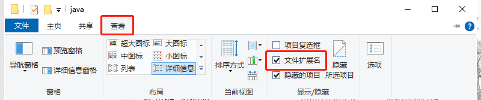
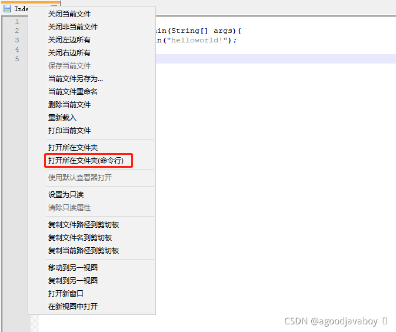
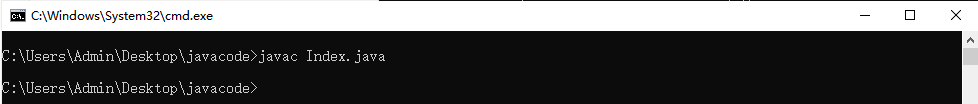
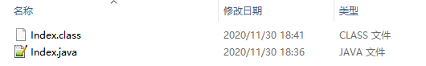
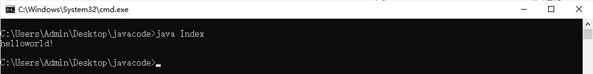
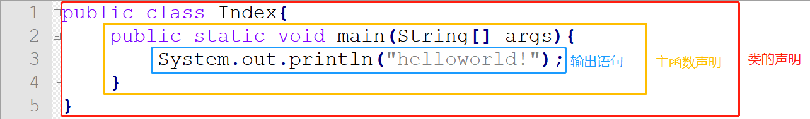
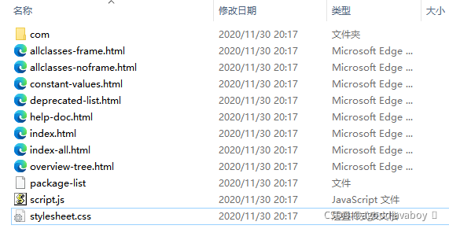
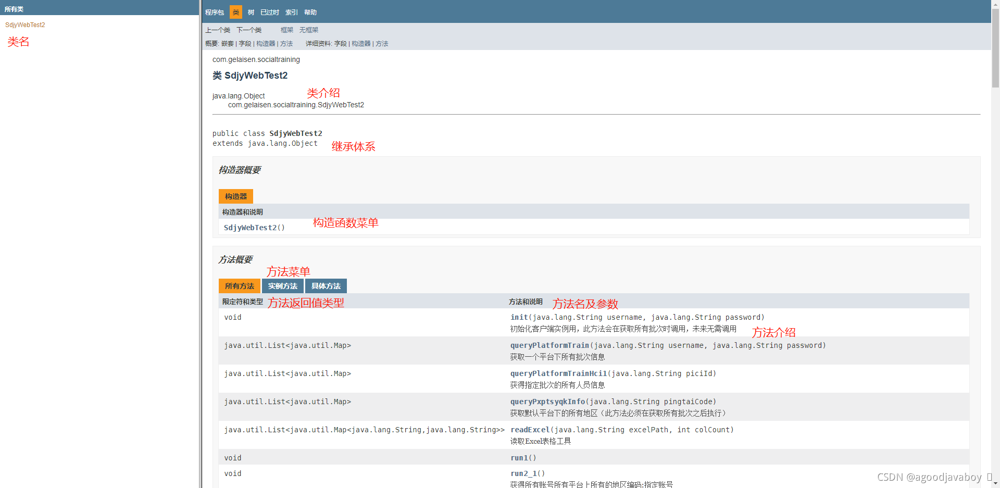

# 入门程序
Hello World 中文意思是『你好，世界』。因为 《The C Programming Language》 中使用它做为第一个演示程序，所以后来的程序员在学习编程或进行设备调试时延续了这一习惯。
# 在写代码前的准备工作
# 编辑工具的选用
程序专用的开发工具有很多，但在初学阶段仍然建议使用最简单最普通的文本编辑工具来实现编码，这样在编译和运行过程中能够观察到class文件的生成和变化，以及锻炼手写代码的能力。
Windows虽然自带了写字本工具能够进行编码输入，但在书写代码方面更推荐能够实现代码高亮效果^高亮的记事本，例如notpad++ (opens new window)或者ultraedit（UE） (opens new window)，这两个工具都可以实现实时代码高亮但并不会出现代码提示，并且这两个工具仅提供文本编辑功能，并不干预编译和运行。
# 扩展名的设置
扩展名实际是文件名的一部分，这段字母会帮助操作系统识别文件的类型，从而决定采用什么软件和何种机制来操作这个文件。
很多的计算机默认将扩展名关闭，大多看到的只是文件名，并且计算机只认为最后一个英文点后的字母为文件的扩展名，如果文件名中出现多个点，那最后一个点前面的所有字符都作为文件名展示，但实际文件名中的扩展名已经被操作系统隐藏。
很多情况下这种文件会混淆文件的原名称， 以下以Win10举例，务必将文件扩展名设置为展示状态。

# 书写与运行第一个程序
使用文本编辑工具创建文件，命名为
Index.java，文件名将在未来自拟，但扩展名必须要写成java。文件内编辑如下内容：public class Index{ public static void main(String[] args){ System.out.println("helloworld!"); } }1
2
3
4
5因为Java程序是先编译后解释的，所以要现开始对Java源文件进行编译生成class文件。如果采用notpad++工具，可以直接在文件页签上右击，打开文件所在的文件夹命令行来执行编译语句：

在打开的命令行中输入javac指令以开始编译源文件，具体语法类似如下：

在编译语句执行后，如果未展示任何字符则表示编程成功，展示的任何字符都表示源代码中存在语句错误。
编译完成后在源文件旁边将生成对应的class文件，文件名与java文件名相同，但扩展名为class：

在文件夹中输入cmd，或者在编译所用的命令行中执行解释语句，来运行class文件。因为java文件生成class文件必定在其同一文件夹，所以使用原命令行也是同样定位到class文件所在文件夹。具体执行语句如下，注意在此处无需书写class文件扩展名：

如果打印内容与上图一致，则表示语句执行成功，否则表示代码编写或编译异常。
再次重申Java语言是先编译后解释的，编译的是java文件，其作用是生成class文件。解释是运行class文件，来运行java文件所指定的语句。
如果Java文件中的代码出现了变化，则必须要重新编译生成class文件后执行，否则无法运行出java文件更改后的代码。
# 解释程序内容

类的声明：类是Java文件的根基，所有的代码都要写到类中（除了包相关定义）。如果class单词前出现了public，则表示此类为公开类。一个java文件中允许存在多个类声明，但每个类中最多仅能存在一个公开类，或者不存在公开类。当一个java文件中存在多个类声明时，编译java文件将根据类的个数生成class文件，class文件名称与类名相同。
- public：修饰class为公开类。
- class：声明一个类，开始结束使用对称大括号定义。
- Index：自拟的类名称，公开类的名称必须与文件名相同，尽量采用无空格字母组成。
主函数的定义：类中主要存在属性和方法，其中主函数是一种特殊的函数，将在程序在被解释时自动启动主函数来执行其中的内容。每个类中最多只能存在一个主函数，主函数中除了大括号内的内容之外都是规定写法，不能有其他写法。
- public：修饰方法为公开方法。
- static：修饰方法为静态方法。
- void：规定方法的返回值为无返回。
- main：方法名称。
- String[] args：小括号中的内容都是方法的参数。
输出语句：输出语句用于向控制台中输出内容，如果输出的内容中存在中文，则需要使用文本编辑工具更改文件的编码格式，否则将出现乱码问题。
- System.out.println：此语句为系统内置的，是规定写法。其中println表示打印在一行中，将在打印完成后执行一次换行。如果将单词改为print，则不会在打印后出现换行。
- (“xxx”)：实际要打印的内容，必要使用双引号包裹。如果存在中文需要使用文本编辑工具的编码修改工具，修改当前java文件的编码格式，否则会出现中文乱码问题。
- ;：在java中，每一个语句都要以一个分号结尾。
有关代码中出现中文，从而导致编译报错的问题解决方案：
出现此问题的原因是控制台所采用的系统编码，在对java文件进行解析的时候，出现了编码异常情况，从而导致编译过程中，系统错误的认为代码中出现了错误的语句导致的。
解决方案就是将文件的编码格式与操作系统的编码格式统一即可。以Notpad++为例，首先要把所有源代码剪切到粘贴板中，然后对文件进行编码修改，再将源代码粘贴回文件即可。
# 关于公开类的解释
一个java文件中可以存在多个类，但通常一个java文件中只存在一个类，那个类就是公开类。因为公开类的名称必要与文件名相同，所以在看到文件名后就能知道类名，也有助于更方便的理解类名想表达出来的代码含义。
在使用控制台编译运行程序时，也将优先扫描公开类中的主函数来执行。
关于公开类，需要有以下几个规定：
- 公开类的修饰为public，也就是在class前面添加public单词。
- 每个java文件中，只能存在一个公开类，或者没有公开类，但是不能存在多个公开类。
- 普通类可以与文件名同名，公开类的类名必须与文件名相同。
- 一般情况下，在每个java文件中只存在一个类，这个类就是公开类，这样通过文件名即可知道类名。
# 注释
为方便描述程序具体运行内容或屏蔽部分无用代码使其无法执行，可使用特殊的标签符号在程序中书写自然语言字符，这种包裹自然语言字符的标签被称为注释。
# 行内注释
System.out.print("hello");//这是一个打招呼的语句
单行注释由两个斜杠组成，将把两个斜杠以后，换行符之前的代码进行忽略。比较适用于在语句后添加注释。 由于到达一个换行符后就会注释停止，所以单行注释是不能跨行使用的，如果在多行中进行注释，则要在多行中分别使用单行注释。
# 多行注释
/*
注释的内容
并且可以跨越多行
*/
2
3
4
多行注释分为两部分，斜杠加星号为开头符号，星号加斜杠为结束符号。开头符号到最近的结束符号之间的内容将被注释。开始与结束符号之间内容不限，可以是换行符，也就是说多行注释是可以跨行进行注释的。
由于结束符号是从最近的结束符号来控制的，所以多行注释是不能嵌套的，会遗漏一部分代码和结束符号在外部：
/* ← 此为开始符号
/*
↓ 此为正常结束符号
*/
此处的代码不会被注释
这个结束符号也不会被注释 → */
2
3
4
5
6
# 文档注释
/**
* 这个方法用于输出一个helloworld
*/
public static void main(String[] args){
System.out.println("helloworld");
}
2
3
4
5
6
文档注释一般是写在方法或者类上的，文档注释类似多行注释，但是开头符号是两个星号，一般情况下文档注释中的每一行的开头都会以星号开头。
文档注释中会存在很多特定的参数，这些参数将用于表述类的作者和创建时间，以及方法的参数返回值等信息，这些信息将用于生成介绍文档内容。
通过文档注释的代码易读性更高，并且可以通过文档注释生成html格式的文档笔记，来系统的对程序代码进行查阅和解释。生成文档要借助javadoc指令来完成，首先要将命令行定位到Java文件所在路径下，然后执行javadoc -d 文件夹名 java文件名.java，其中的文件夹名表示将文档存放到哪里：
执行完语句后，在指定路径中将生成相关html文件及其他依赖文件：

其中index.html文件为首页，通过浏览器打开即可看到通过文档注释所生成的文档具体内容：

# 标识符命名规范
标识符表示在程序中所有用于标识类、方法、变量名称的字符，标识符的命名需遵循一定规范，并规避采用关键字^关键字和保留字^保留字，否则将导致程序异常。判断关键字可以使用具有高亮功能的编辑工具来判断，通常字体出现特殊颜色的单词大多为保留字或关键字。
![[外链图片转存失败,源站可能有防盗链机制,建议将图片保存下来直接上传(media/2df296f11ba24665936256290a19067b.png)(media/image-20211118200333405.png)]](https://img-blog.csdnimg.cn/2df296f11ba24665936256290a19067b.png?x-oss-process=image/watermark,type_ZHJvaWRzYW5zZmFsbGJhY2s,shadow_50,text_Q1NETiBAYWdvb2RqYXZhYm95IOKAjQ==,size_20,color_FFFFFF,t_70,g_se,x_16)
标识符的命名规范分为两类，强制命名规范如果违反将导致程序异常报错无法运行，建议性的规范并不会导致程序异常，但命名规范通常在业内大多数应用中使用，采用标准的规范能快速的了解标识符所标识的成员含义甚至类型。
# 强制命名规则
- 命名只能以数字、字母、下划线(_)、美元符号($)组成，不能出现空格或其他字符。
- 数字不能开头，但可以穿插到中间或末尾。
- 命名没有长度的限制，但严格区分大小写。
- 不得使用java中的关键字和保留字，关键字和保留字是java已经为其定义了具体的含义，或者准备对其做具体含义的单词。例如
class（关键字）或goto（保留字）都不可作为自定义名称。
# 命名规范
- 包名：字母全部小写，例如
pack。 - 类名：每个单词的首字母大写，例如
HelloWorld。 - 变量名、方法名：第一个单词的首字母小写，其他的单词首字母大写，例如
helloWorldVeryGood。 - 常量名：单词全部大写，每个单词之间用下划线隔开，例如
USER_SEX。 - 见名知义：在遵循以上标准的基础上，通常采用有意义的单词来构成标识符。
← JDK安装与环境配置 数据类型 →